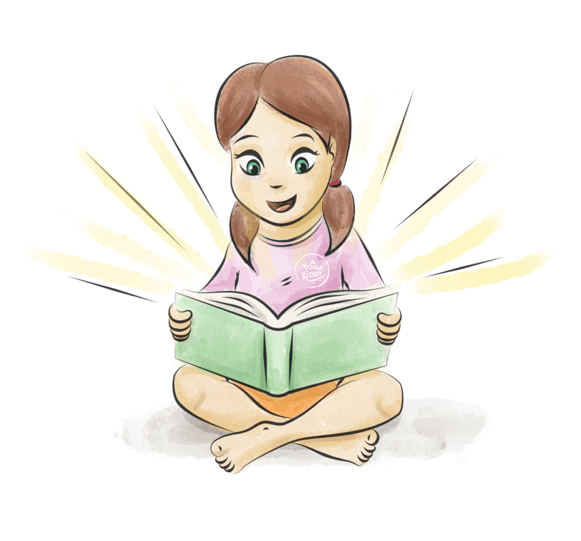

Es una fusión que nos permite atender a todo nuestro ser, ya sea a nivel físico, mental, emocional y espiritual, convirtiéndose en una posibilidad de aprendizaje inmensa para quienes participen de esta creación, contemplando al o la impulsora del relato y a quienes son parte de la construcción continua.
Mediante un cuento podemos abordar los fundamentos del yoga, conocidos como los 8 Pasos de Patanjali, base que nos permite comprender el camino de esta disciplina.
Podemos poner el foco en Yamas (Principios Morales), Niyamas ( Observaciones personales), Asanas (Trabajo físico), Pranayama (Respiración), Pratyahara (Abstracción de los sentidos), Dharana ( Concentración), Dhyana ( Meditación) y/o Samadhi (Estado de Unidad).
Según nuestros intereses, podemos comenzar a abordar los cuentos desde el peldaño que más nos acomode y luego ir integrando varios de ellos para así ofrecer el Arte de Contar Cuentos como una experiencia integral para atender al ser en su totalidad.
¡Los cuentos son un medio inmensamente noble, ya que para compartirlos no piden nada a cambio! sólo nuestro interés, necesidad y urgencia de compartir aquella narración oral con oyentes dispuestos a transformarse, ya que nadie vuelve a ser el mismo o la misma después de escuchar la mágica danza de palabras que produce la oralidad. Aquella simbiosis nos da la posibilidad de reconocernos, conocernos y transformarnos mediante las historias, pudiendo conectar nuestros mundos interiores y exteriores para embellecer el presente.
Los relatos permiten valorar y disfrutar las bondades de lo imaginario, pudiendo abrir puertas sorpresivas y aquellas que se cierran con facilidad, instalando imágenes para ampliar la visión del mundo de quienes contamos y de quienes nos escuchan.
Los niños y las niñas al escuchar un cuento tienen la posibilidad de crear un sin fin de imágenes, ya que cada uno/a resonará de manera diferente con las miles de historias que descansan sobre las nubes. Además pueden reconocerse en la emoción de otro/a e identificarse para fortalecer su identidad.
“Libertad de soñar e imaginar” … A muy temprana edad nos aniquilan la posibilidad de imaginar, de fantasear, no pudiendo ocupar este recurso para la vida, para nuestro desarrollo integral como seres humanos. Es necesario perpetuar aquella necesidad de imaginar lo inimaginable, convirtiéndolo como herramienta de vida para recorrer el camino. Es responsabilidad de todos y todas, proporcionar experiencias donde la infancia tenga la constante posibilidad de imaginar, ya que así damos paso a infantes más creativos, más seguros de sí mismos, capaces de imaginar sus futuros mediante un presente soñador que busque más allá de lo establecido.
No hay una única manera de mirar el mundo y de vivir en él, así como también existen miles de formas de imaginar, lo cual se construye desde la experiencia personal y las características biopsicosociales de cada ser humano.
El o La Cuenta Cuentos: Es un o una intermediaria que tiene la necesidad urgente de compartir un relato, una danza de palabras para ser regaladas. Para ello es preciso, verse deslumbrada/o por una historia para sorprenderse y desde ahí dejarse empapar por todos sus mensajes, los cuales son decodificados y transformados según el presente del narrador.
No contamos para los niños, niñas, jóvenes o adultos/as, sino que junto a ellos, ya que son los oyentes quienes permiten la construcción mágica e irrepetible del relato, dependiendo de las características reales y no supuestas de un grupo humano, valorando lo espontáneo de la oralidad.
Algunos ejemplos de cuando niños y niñas escuchan un Cuento con Yoga:
- Fortalecen su atención y concentración. (Dharana)
- Respetan el silencio y la escucha. (Pratyahara)
- Descubren y crean nuevos mundos. ( Dhyana- Yama)
- Se reconocen con la historia y sus personajes, pudiendo identificar similitudes y diferencias consigo mismos. ( Dhyana- Yama- Pratyahara )
- Aprecian la grandeza de lo imaginario. (Dhyana)
- Vivencian la presencia total en el presente. (Dharana-Samadhi)
- Reviven una emoción. (Yama, Niyama)
- Integran nuevas herramientas para conocerse. (Yamas-Niyama-Dharana)
- Regulan el impulso de accionar. (Niyama- Pranayama)
- Honran la palabra. (Niyama)
- Se interesan por la lectura. (Niyama)
- Desarrollan pensamiento divergente. (Dhyana)
- Observan el cuerpo del o la Narradora. (Asanas)
- Practican diversas posturas de manera lúdica. (Asanas)
Más infos:
Formación de Cuentacuentos con Yoga
https://yogakiddy.com/formacion-de-cuentacuentos-con-yoga
Peggysue.S.S